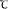

Проблема отражения времени при проектировании .
Предполагается, что автомат функционирует в дискретные моменты времени, т.е. непрерывная шкала времени разделения на интервалы, которые занумерованы целыми положительными числами t i=0, 1, 2, ... , j ... и которые будем называть тактами. На протяжении одного такта сохраняются неизменными состояние входа, состояние выхода и внутреннее состояние автомата. Время, в течение которого не происходит изменения состояния входа автомата, обозначим через Т, и в зависимости от того, чем определяется длительность этого интервала времени, будем различать два класса автоматов : синхронные и асинхронные. Синхронный автомат характеризуется тем, что имеется генератор тактовых (или синхронизирующих) сигналов ( ТГ ) и входные сигналы могут воздействовать на автомат лишь при наличии сигнала от ТГ. Таким образом, время Т строго фиксировано и определяется длительностью сигнала ТГ. Автомат может воспринимать новое состояние входа лишь после того, как он перешел в определенное внутреннее состояние. Поэтому частоту ТГ выбирают такой, чтобы до появления следующего сигнала от ТГ автомат успел перейти в это внутреннее состояние (время перехода автомата из одного внутреннего состояния в другое будем обозначать через ), т.е. необходимо обеспечить следующее соотношение :
∆ >> макс ,
где ∆ = Т + δ ; δ - интервал между двумя соседними сигналами от ТГ ; макс - наибольшее время перехода автомата из одного внутреннего состояния в другое. Обычно длительность этого сигнала выбирают такой, что T ≤ мин, т.е. изменение внутреннего состояния автомата происходит лишь в интервалах между двумя соседними сигналами от ТГ, когда входные сигналы не воздействуют на автомат.
Таким образом, для синхронных автоматов интервал времени T совпадает с тактом работы автомата, так как состояние входа и внутреннее состояние автомата на протяжении этого времени остаются неизменными. Обычно в абстрактной теории автоматов не интересуются поведением автомата в интервалы времени δ, а считая, что переход автомата из одного внутреннего состояния в другое происходит мгновенно, рассматривают лишь интервалы времени T, каждый из которых сопоставляется с моментом времени ti. Поэтому в абстрактном автомате может оказаться, что два соседних такта, определяемые двумя последовательными моментами времени ti и ti+1 , будут соответствовать одним и тем же состояниям входа. Однако заметим еще раз, что в реальном синхронном автомате эти два момента времени всегда разделены интервалом δ, в течение которого отсутствует синхронизирующий сигнал от ТГ.
Таким образом, для синхронных автоматов
характерно следующее :
1) входные сигналы воздействуют на автомат в строго фиксированные
моменты времени и T=const ;
2) изменение внутренних состояний автомата осуществляется в
интервалы времени, когда нет воздействия входных сигналов.
В асинхронных автоматах длительность интервала времени Т, в течение которого остается неизменным состояние входа, является величиной переменной и определяется только моментами изменения состояния входа. Поэтому каким бы продолжительным ни был интервал времени, в течение которого сохраняется неизменным состояние входа, он будет восприниматься автоматом как один и тот же интервал времени t. Следовательно, двум последовательным интервалам времени ti и ti+1 всегда должны соответствовать различные состояния входа.
Обычно считают, что изменение состояния входа асинхронного автомата может произойти лишь после того, как автомат перешел в определенное внутреннее состояние Тмин >> макс , где Тмин - наименьший интервал времени, в течение которого сохраняется неизменным состояние входа. В связи с этим изменение внутреннего состояния автомата происходит при неизменном состоянии входа, так что одному и тому же интервалу времени Т может соответствовать несколько различных внутренних состояний. Поэтому интервал времени Т будет разделен на несколько тактов. Таким образом, переход к новому такту вызывается не только изменением состояния входа, но и изменением внутреннего состояния автомата. Такт, предшествующий моменту изменения состояния входа автомата, часто называют устойчивым тактом. Такт, предшествующий моменту изменения состояния автомата, называют неустойчивым тактом. Длительность неустоцивого такта определяется временем перехода автомата из одного внутреннего состояния в другое и зависит от параметров элементов, образующих структуру автомата. В ряде случаев автомат работает так, что на протяжении одного и того же интервала времени Т может быть несколько неустойчивых тактов. Поэтому и должно выполняться неравенство Тмин >> макс , чтобы при любом конечном числе r неустойчивых тактов макс r < Тмин .
Для асинхронных автоматов, таким образом,
характерно следующее :
1) длительность интервала времени Т является величиной переменной
и определяется лишь изменениями состояния входа автомата ;
2) переход в новое внутреннее состояние осуществляется при неизменном
состоянии входа.